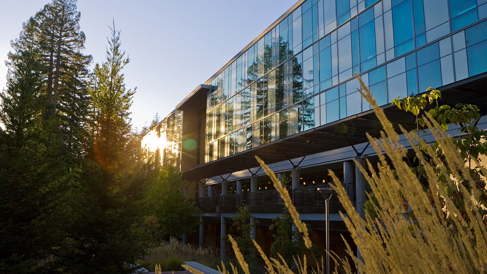

I am an Iranian-born student who moved to the United States at the age of 12. Although I
regularly miss home, I see myself as extremely fortunate to have been able to continue my life
in a foreign country. Growing up here made me appreciate learning about different cultures and
value the best combinations of life, living as a bi-cultural person. Iranian history has had a significant
impact on the world through art, architecture, poetry, science and technology, medicine, philosophy,
and engineering. People often describe Iran as a country with "eclectic cultural elasticity", a key defining
characteristic of the Iranian identity and a clue to its historical longevity.
It is hard to be away from home when you have so many friends and family that you do not see or
talk to as much as before, which has been quite frankly one of the hardest parts I deal with
every now and then. Since the beginning of 2026, it has been difficult being a Persian in the USA;
alot of internal conflicts arises, so if you know any Iranians, please check in with them!
I was one of the first group of students who entered college once COVID-19 sent the world into
lockdown. Being graduated from a local high school in Santa Cruz meant that I was going to move
far away to attend college. Unfortunately, life or destiny or faith (whatever it was) decided
that I attend the University of California, Santa Cruz. To be fair, I have since loved UCSC for
its wonderful Computer Science Program, as well as for finding friends and connections through
different paths.
I have offically earned my Masters in Computer Science in June of 2026. It has
been an honest pleasure to have been educated here, as I hope to take the knowledge and the
skill set that I have gained from the last 4-6 years and apply them to industry-related work. In
the later years, I plan to specialize in something I found interesting like Machine Learning and
Artificial Intelligence.
-
SWE @ IBM (San Jose)
- Incoming New Grad Software Developer 😀

-
SWE Intern @ SpaceX (Sunnyvale)
- Designed an end-to-end Python ETL data pipeline resulting in near real-time
ingestion of
multilingual Typeform survey data into SQL Server.

-
Prompt Engineer @ Scale AI (San Francisco)
- Enhanced Gemini's code generation accuracy to 70% through iterative prompt
refinement and SDLC practices.

-
Teaching Assistant @ Baskin School of Engineering (UCSC)
- Instructed over 1,000 students in Data Structures & Algorithms using C/C++,
managed 15+ teaching staff.
- C/C++ (4 years)
- Python (6 years)
- HTML/CSS/JS (2 years)
- SQL & Postgres (3 years)
-
HealthWise
- Contributed to RootWise, an AI-driven platform exploring transparent RAG systems for
nutrition and functional medicine, and developed ZoneWise, a personalized health
analytics dashboard that transforms physiological metrics into actionable insights
through data visualizations and conversational AI.
-
Data Structures
- Series of popular algorithmic programs, designed mostly in C/C++, from simple linked
lists to graphs, sorting/seraching, and etc.
-
Machine Learning
- Small projects that showcases different ML applications in the real world.
-
Computer Networks
- Concentration on HTTP servers and network firewalls and topology designs.
-
Multi Threading
- Series of programs that are built up on top of each other, eventually creating a
multi-threaded HTTP servers.
-
Computer Graphics
- Introduces techniques of modeling, transformation, and rendering for
computer-generated imagery. Topics: 2D/3D primitives, projections, matrix
composition, and shading algorithms.